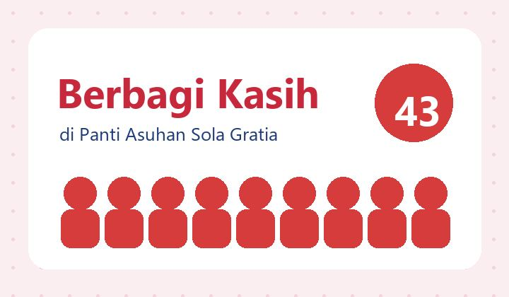

iPop Notifier — tampilan ramah Mockup untuk persetujuan · ukuran lebar sama untuk semua popup, tinggi mengikuti isi (360–640 px) · tombol aksi di bawah
1 · Email masuk — balas langsung di popup
Email· 2 Okt, 08.02
Re: Test Message
AAAdrio Andhika Antoninuskepada Anda · PT Santos Jaya Abadi
Bagas,
Pesan di bawah ini apakah diterima?
Pada Kam, 1 Okt 2026 14.53, Adrio Andhika Antoninus menulis: This is a test
Rapat "Weekly ICT Sync" dimulai pukul 09.00. Klik Gabung sekarang untuk masuk ke ruang rapat.
3 · Chat tiket iDesk — warna & logo iDesk, beda dari iPop
iDesk· 16.35
Email tidak bisa diakses
#051026-SEC-0003Sedang dikerjakanPrioritas sedang
CMChristhin Magdalenamembalas tiket · 2 pesan baru
Pak, wifi di ruang meeting lantai 2 masih putus-putus. Bisa dicek hari ini?
Balas di chat tiket
4 · Notifikasi tertunda — masuk saat PC mati, muncul satu per satu
Pemberitahuan· 16.35
1 dari 4 tertunda· masuk saat PC mati · menutup tidak menandai dibaca
Survei kepuasan ICT
Mohon isi survei singkat tentang layanan ICT bulan ini. Hanya butuh 2 menit.
5 · Berita / memo — dengan gambar
Berita & Memo· 09.10
Jadwal libur akhir tahun 2026
HRHuman ResourcesMemo wajib dibaca
Kantor libur mulai 24 Desember hingga 1 Januari. Pastikan pekerjaan penting sudah diserahterimakan sebelum 23 Desember.

6 · Kotak notifikasi (Inbox) — status koneksi di atas, footer rapi
Notifikasi
Bagastyo · 35 belum dibaca
Menyambung ulang ke iPop… notifikasi tetap aman
Hari ini
Survei kepuasan ICTMohon isi survei singkat.
2 pesan baru · #051026-SEC-0003Christhin: Pak, wifi di ruang meeting…
Jadwal libur akhir tahunHuman Resources · memo wajib dibaca
Jumat, 16 Okt
Pengingat rapat: Weekly ICT SyncMulai 09.00 · Ruang Rapat 2
Re: Test MessageAdrio Andhika: Pesan di bawah ini apakah…
Popup aktif
7 · Halaman "Masuk dengan iPop" — rata tengah, Bahasa Indonesia
Melanjutkan ke iDesk…
RBRM Bagastyo Anggoro Indrastoto
iDesk hanya menerima nama, email, departemen, dan NIK Anda — tidak pernah password.
Yang berubah: semua aksi berbentuk tombol (tinggi 42 px, sudut membulat, ikon + tulisan) · tombol utama berwarna penuh sesuai modul, tombol lain lembut · tombol di bawah setelah isi pesan ·
kepala popup berwarna lembut per modul (Email biru, Rapat oranye, iDesk biru + logo iDesk, Berita ungu, Pemberitahuan abu) · isi pesan di dalam kartu · huruf sedikit lebih besar, dan pilihan "Tulisan besar" di Pengaturan ·
Bahasa Indonesia · Inbox: status "Menyambung ulang…" pindah ke strip di atas dan hanya muncul bila terputus > 10 detik, lalu "Tersambung" sebentar dan hilang.